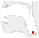

[U+202F NARROW NO-BREAK SPACE]
[U+202F NARROW NO-BREAK SPACE]Updated 22 September, 2021
@ This page brings together basic information about the Arabic script and its use for the Iranian Persian language. It aims to provide a brief, descriptive summary of the modern, printed orthography and typographic features, and to advise how to write Persian using Unicode.
Phonetic transcriptions on this page should be treated as an approximate guide, only. Many are more phonemic than phonetic, and there may be variations depending on the source of the transcription.
Snippets for invisible characters
[U+202F NARROW NO-BREAK SPACE]
 [U+180E MONGOLIAN VOWEL SEPARATOR]
[U+180E MONGOLIAN VOWEL SEPARATOR]
 [U+070F SYRIAC ABBREVIATION MARK]
[U+070F SYRIAC ABBREVIATION MARK]
 [U+034F COMBINING GRAPHEME JOINER]
[U+034F COMBINING GRAPHEME JOINER]
 [U+200C ZERO WIDTH NON-JOINER]
[U+200C ZERO WIDTH NON-JOINER]
 [U+202B RIGHT-TO-LEFT EMBEDDING]
[U+202B RIGHT-TO-LEFT EMBEDDING]
 [U+202A LEFT-TO-RIGHT EMBEDDING]
[U+202A LEFT-TO-RIGHT EMBEDDING]
 [U+202C POP DIRECTIONAL FORMATTING]
[U+202C POP DIRECTIONAL FORMATTING]
 [U+2067 RIGHT-TO-LEFT ISOLATE]
[U+2067 RIGHT-TO-LEFT ISOLATE]
 [U+2066 LEFT-TO-RIGHT ISOLATE]
[U+2066 LEFT-TO-RIGHT ISOLATE]
 [U+2069 POP DIRECTIONAL ISOLATE]
[U+2069 POP DIRECTIONAL ISOLATE]
Sample_text_goes_here
Unified Canadian Aboriginal Syllabics are used for a range of Algonquin and Inuit orthographies indigenous to Canada, including Cree, Ojibwe, Inuktitut, and occasionally Blackfoot languages.
Inuktitut syllabics are used in Canada by the Inuktitut-speaking Inuit of the territory of Nunavut and the Nunavik region in Quebec. The script is used by governmental agencies and in business, education, and media.
In 1976, the Language Commission of the Inuit Cultural Institute made Inuktitut syllabics the co-official script for the Inuit languages, along with the Latin script and standardised both orthographies.
ᖃᓂᐅᔮᖅᐸᐃᑦ qaniujaːqpaˈit Inuktitut syllabics ᖃᓕᐅᔮᖅᐸᐃᑦ qaliujaːqpait something else
The 'Inuktitut language' comprises a number of similar dialects, which have divergeant vocabulary and pronunciation. The following lists dialects in Nunavit: Inuinnaqtun, Nattilingmiutut, Qamani’tuarmiutut, Paallirmiutut, Aivilingmiutut, North Qikiqtaaluk, Central Qikiqtaaluk, South Qikiqtaaluk (includes the capital, Iqaluit), and Sanikiluarmiutut. The orthography follows the sounds spoken, which leads to different spellings for the different dialects. Some dialects use only the Latin orthography.
The Canadian syllabic script was first created in 1840 by the British missionary James Evans for writing the Swampy Cree dialect. The individual symbols may represent different phonemes for each language.
The syllabic script was first adapted to represent Inuktitut around the middle of the 1800s, again by missionaries, and early print runs occurred in the 1870s.w
Sources Scriptsource and Wikipedia.
@ Hausa has also been written in ajami since the early 17th century.w
@ There is no standard system of using ajami for Hausa, and different writers may use letters with different values.w
@ There are or have been a number of variant practices for writing Hausa ajami. There are also some confusable characters. They include the following:
@ The thisScript script is an abugida. Consonants carry an inherent vowel which can be modified by appending vowel-signs to the consonant. See the table to the right for a brief overview of features for the modern thisLanguage orthography.
@ The thisScript script is an alphabet. Both consonants and vowels are indicated by letters. See the table to the right for a brief overview of features for the thisLanguage language.
XXX text runs left to right in horizontal lines.
essential features: cursive (+ degree of change), bicameral,
word separation
XX basic consonant letters, repertoire extensions, registers & tone calculation
consonant clusters: virama, conjunct types, RA
syllable-initial clusters
XX basic vowels, matres lectionis, other consonants, nasalisation
XX tone marks, how calculate tone
syllable/word-final characters or indicators
other combining marks of note
numbers, punctuation
See also vocalics.
These are sounds for the XXXXXX language.
Click on the sounds to reveal locations in this document where they are mentioned.
Phones in a lighter colour are non-native or allophones. Source Wikipedia.
The following represents the repertoire of the Balinese language.
Click on the sounds to reveal locations in this document where they are mentioned.
Phones in a lighter colour are non-native or allophones. Source Wikipedia.
All but 1 of the diphthongs in Shan end in i or u/w.
| labial | dental | alveolar | post- alveolar |
retroflex | palatal | velar | uvular | pharyngeal | epiglottal | glottal | |
|---|---|---|---|---|---|---|---|---|---|---|---|
| stop | p b pʰ bʰ |
t d tʰ dʰ |
ʈ ɖ ʈʰ ɖʰ |
c ɟ | k ɡ kʰ ɡʰ |
q ɢ | ʡ | ʔ | |||
| affricate | t͡s d͡z | t͡ʃ d͡ʒ t͡ʃʰ d͡ʒʰ t͡ɕ d͡ʑ t͡ɕʰ d͡ʑʰ |
|||||||||
| fricative | f v | θ ð | s z ɬ ɮ |
ʃ ʒ ɕ ʑ ɧ |
ʂ ʐ | ç ʝ | x ɣ | χ ʁ | ħ ʕ | ʜ ʢ | h ɦ |
| nasal | m | n | ɳ | ɲ | ŋ | ɴ | |||||
| approximant | ʋ w | l ɫ ɹ | ɻ ɭ | j ʎ | ɰ ʟ |
||||||
| trill/flap | r ɾ ɺ | ɽ | ʀ | ||||||||
 |
 |
 |
 |
 |
 |
 |
 |
 |
Hausa has 3 syllable types: CV, CVV, and CVC, where VV can be a long vowel or a diphthong.c The long vs. short vowel distinction is phonemically important, however when a syllable with a long vowel acquires and final consonant, the vowel is shortened.
Consonant clusters may occur where syllables are side by side, but not within a syllable. Gemination is, however, a distinctive feature.c
Semivowels ʷ and ʲ may occur after an initial consonant.
Newar consonants have an inherent vowel sound. Other, non-inherent vowel sounds following a consonant are written using vowel-signs and other symbols. Vowels have short and long lengths, and are regularly nasalised.
Standalone vowels are written using independent vowel letters.
Additional symbols are used to express length and nasalisation.
Click on the characters in the lists for detailed information. For a mapping of sounds to graphemes see vowel_mappings.
a following a consonant is not written, but is seen as an inherent part of the consonant letter, so ka is written by simply using the consonant letter 𑐎 [U+1140E NEWA LETTER KA].
Non-inherent vowel sounds that follow a consonant can be represented using vowel-signs, eg. kiː is written 𑐎𑐷 [U+1140E NEWA LETTER KA + U+11437 NEWA VOWEL SIGN II].
Newar uses the following vowel-signs. They may be used on their own, or in combination with other characters (see composite_vowels).
Newar vowel-signs are all combining characters. All vowel-signs are stored after the base consonant, and the font puts them in the correct place for display. This also applies for the 5 circumgraphs, where a single code point produces glyphs on more than one side of the consonant base.
Five vowel-signs are spacing marks, meaning that they consume horizontal space when added to a base consonant.
A rather unusual feature of Newa orthography is that vowel-signs with a wavy horizontal line replace the flat headstroke of the base consonant.
This includes vowels written with the following vowel-signs: 𑐾 [U+1143E NEWA VOWEL SIGN E], 𑑀 [U+11440 NEWA VOWEL SIGN O], 𑐿 [U+1143F NEWA VOWEL SIGN AI], and 𑑁 [U+11441 NEWA VOWEL SIGN AU].p,6

The sound u is produced by the letter 𑐸 [U+11438 NEWA VOWEL SIGN U], but that letter can have a different shape when attached to different consonant letters. The vowel-sign used to represent the long uː sound also has contextual variations, though not as many as the short vowel. All of these orthographic variants are produced automatically by the font; there is no need to use different characters.
The short sound is rendered as a curved shape with the following 4 consonant letters:p,7
The alternative shape is shown in fig_u_shape.

Both short and long sounds are also written as ligatures with the consonant letters 𑐖 [U+11416 NEWA LETTER JA] and 𑐬 [U+1142C NEWA LETTER RA], as shown in fig_u_ligatures.

The consonants 𑐨 [U+11428 NEWA LETTER BHA] and 𑐴 [U+11434 NEWA LETTER HA] also take on special shapes when followed by a u-vowel (see bha_ha).
The short i sound is written using 𑐶 [U+11436 NEWA VOWEL SIGN I], which appears to the left of the base consonant letter or cluster.

This combining mark is always typed and stored after the base consonant. The font places the glyph before the base consonant.
When an orthographic syllable begins with a consonant cluster that is rendered as a conjunct, the vowel-sign is rendered before the start of the syllable, eg. here are 3 sets of consonant clusters, each followed by i when spoken, but the vowel-sign appears to the left of each cluster.𑐗𑑂𑐏𑐶 𑐳𑑂𑐟𑐶 𑐧𑑂𑐬𑐶 jkhi sti bri
Another idiosyncracy of Newa orthography is that 5 vowel-signs change shape when attached to the base consonants that don't have a headstroke. Four of those vowel-signs are so-called 'wavy-headed', and when combined with the 7 headless consonants they are rendered as circumgraphs.p,6
The following table shows the various forms, combined with both KA (has headstroke) and GA (headless). The last 4 vowel-signs combined with the headless GA produce the circumgraphs.
| With headstroke | Without headstroke | |
|---|---|---|
| 𑐵 [U+11435 NEWA VOWEL SIGN AA] | 𑐎𑐵 | 𑐐𑐵 |
| 𑐾 [U+1143E NEWA VOWEL SIGN E] | 𑐎𑐾 | 𑐐𑐾 |
| 𑑀 [U+11440 NEWA VOWEL SIGN O] | 𑐎𑑀 | 𑐐𑑀 |
| 𑐿 [U+1143F NEWA VOWEL SIGN AI] | 𑐎𑐿 | 𑐐𑐿 |
| 𑑁 [U+11441 NEWA VOWEL SIGN AU] | 𑐎𑑁 | 𑐐𑑁 |
No special encoding is needed to create these circumgraph forms. The shape change should be effected automatically by the font. Also, unlike some other Indic scripts, it is not possible to compose these circumgraph forms by combining other Newa characters, since the shapes don't exist in the character set. This makes life a little easier.
It is common to see Newar vowels described in a chart which shows long and nasalised forms.
Vowel length is indicated by using a dedicated character in the case of 𑐷 [U+11437 NEWA VOWEL SIGN II] and 𑐹 [U+11439 NEWA VOWEL SIGN UU], but otherwise by adding 𑑅 [U+11445 NEWA SIGN VISARGA].
Nasalisation is indicated using 𑑃 [U+11443 NEWA SIGN CANDRABINDU] for a short vowel, and 𑑄 [U+11444 NEWA SIGN ANUSVARA] for a long vowel.


The following matrix shows these various forms for the vowel-signs. The same rules apply to the standalone vowel letters. Note that long, nasalised ĩː and ũː vowels use the short form of the vowel-sign.m,5-6
| Short | Long | Short nasal | Long nasal | |
|---|---|---|---|---|
| a | inherent | 𑑅 | 𑑃 | 𑑄 |
| æ | 𑐵 | 𑐵𑑅 | 𑐵𑑃 | 𑐵𑑄 |
| i | 𑐶 | 𑐷 | 𑐶𑑃 | 𑐶𑑄 |
| u | 𑐸 | 𑐹 | 𑐸𑑃 | 𑐸𑑄 |
| e | 𑐾 | 𑐾𑑅 | 𑐾𑑃 | 𑐾𑑄 |
| o | 𑑀 | 𑑀𑑅 | 𑑀𑑃 | 𑑀𑑄 |
| əi | - | 𑐿 | - | 𑐿𑑄 |
| əu | - | 𑑁 | - | 𑑁𑑄 |
The composite vowels in Newa are described in length_nasalisation, just above.
Newa uses 𑑂 [U+11442 NEWA SIGN VIRAMA] (the Newa equivalent of the Sanskrit virama) to indicate that there is no inherent vowel after a consonant, eg. the following explicitly represents just the sound k.𑐎𑑂
A word that ends in a consonant shows a virama. This is commonly seen in vowels that end with j, such as at the end of this word: 𑐧𑐶𑐮𑐫𑑂 bily͓
Consonant clusters also use this character, but if the cluster forms a conjunct then the virama is not rendered visibly (see clusters).
Newa represents standalone vowels using a set of independent vowel letters. The set includes a character to represent the inherent vowel sound, a.
Nasalisation and length are marked in the same way as for vowel-signs.
In Sanskrit texts, elision of an initial a due to sandhi is indicated using 𑑇 [U+11447 NEWA SIGN AVAGRAHA].
Traditionally, Tai Viet didn't mark tones, other than by the class of consonant.
@ The expected typing and storage position for tone marks is immediately after the base consonant of the syllable, or after a superscript vowel-sign if there is one. However, the tone mark should be typed before ຳ [U+0EB3 LAO VOWEL SIGN AM], and should be displayed above the nikhahit, eg. ກ່ຳ.
@ The following chart shows how to tell which tones are associated with a syllable.
| Register | Checked? | Mark | Description | Example |
|---|---|---|---|---|
| High | checked | - | ˧˥ high-rising | ᦜᧅ lk̽ (la᷄k) lak˧˥ post ᦜᦱᧅ lak̽ (la᷄ːk) laːk˧˥ differ from others |
| open | - | ˥ high | ᦂᦱ ka (ká) kaː˥ crow | |
| ᧈ | ˧˥ high-rising | ᦂᦱᧈ ka¹ (ka᷄) kaː˧˥ to go | ||
| ᧉ | ˩˧ low-rising | ᦂᦱᧉ ka² (ka᷅) kaː˩˧ rice shoots | ||
| Low | checked |
- | ˧ mid | ᦟᧅ ḻk̽ (lāk) lak˧ steal ᦟᦱᧅ ḻak̽ (lāːk) laːk˧ drag, pull |
| open | - | ˥˩ falling | ᦅᦱ ḵa (kâ) kaː˥˩ to be stuck | |
| ᧈ | ˧ mid | ᦅᦱᧈ ḵa¹ (ka) kaː˧ price | ||
| ᧉ | ˩ low | ᦅᦱᧉ ḵa² (kà) kaː˩ to do business |
@ Experts disagree on the number and nature of tones in the various dialects of Lao. According to some, most dialects of Lao and Isan have six tones, those of Luang Prabang have five. wl See the section tonevalues for more detailed discussion of tones.
Visually, several of the standalone vowels and some vowel-signs look as it they could be composed of smaller parts. This section gives guidance on which approach is best.
Newa is relatively resistant to incorrect coding techniques, but it is possible that someone may occasionally try to use 2 characters rather than the single character which is canonical. Doing so produces text that will not match correctly encoded text for search, spell-checking, and so on, and so should be avoided. The list below shows some examples.
| Use | Do not use |
|---|---|
| 𑐁 [U+11401 NEWA LETTER AA] | 𑐀𑐵 [U+11400 NEWA LETTER A + U+11435 NEWA VOWEL SIGN AA] |
| 𑐌 [U+1140C NEWA LETTER O] | 𑐄𑑀 [U+11404 NEWA LETTER U + U+11440 NEWA VOWEL SIGN O] |
| 𑑀 [U+11440 NEWA VOWEL SIGN O] | 𑐾𑐵 [U+1143E NEWA VOWEL SIGN E + U+11435 NEWA VOWEL SIGN AA] |
The following tables show how Newar vowel sounds commonly map to characters or sequences of characters in the Newa orthography. vs indicates a vowel-sign, and s a standalone vowel.
Inherent vowel
The standard vowel sounds for Santali are written as follows.
Three additional vowel sounds are represented using ᱹ [U+1C79 OL CHIKI GAAHLAA TTUDDAAG],
ᱚᱹ [U+1C5A OL CHIKI LETTER LA + U+1C79 OL CHIKI GAAHLAA TTUDDAAG] is rarely used, and the phonetic difference between it and ᱚ [U+1C5A OL CHIKI LETTER LA] is not clearly defined, but the ALA-LOC transcription page says that it has a lower pitch. The phonemic difference between the two may be only marginal.rp,9
Nasalisation of vowels is indicated using ᱸ [U+1C78 OL CHIKI MU TTUDDAG],rp,9 eg. ᱦᱟᱸᱰᱮ
When the letter is followed by ᱹ [U+1C79 OL CHIKI GAAHLAA TTUDDAAG] a separate Unicode character is used, rather than adding the two characters. That character is ᱺ [U+1C7A OL CHIKI MU-GAAHLAA TTUDDAAG],rp,9 eg. ᱵᱮᱺᱫᱤ
To indicate a prolonged vowel sound, ᱻ [U+1C7B OL CHIKI RELAA] is used,rp,9 eg. ᱢᱚᱹᱬᱮᱻ ᱢᱚᱸᱻᱦᱟ
Traditionally, Tai Viet didn't mark tones, other than by the class of consonant.
@ The expected typing and storage position for tone marks is immediately after the base consonant of the syllable, or after a superscript vowel-sign if there is one. However, the tone mark should be typed before ຳ [U+0EB3 LAO VOWEL SIGN AM], and should be displayed above the nikhahit, eg. ກ່ຳ.
@ The following chart shows how to tell which tones are associated with a syllable.
| Register | Checked? | Mark | Description | Example |
|---|---|---|---|---|
| High | checked | - | ˧˥ high-rising | ᦜᧅ lk̽ (la᷄k) lak˧˥ post ᦜᦱᧅ lak̽ (la᷄ːk) laːk˧˥ differ from others |
| open | - | ˥ high | ᦂᦱ ka (ká) kaː˥ crow | |
| ᧈ | ˧˥ high-rising | ᦂᦱᧈ ka¹ (ka᷄) kaː˧˥ to go | ||
| ᧉ | ˩˧ low-rising | ᦂᦱᧉ ka² (ka᷅) kaː˩˧ rice shoots | ||
| Low | checked |
- | ˧ mid | ᦟᧅ ḻk̽ (lāk) lak˧ steal ᦟᦱᧅ ḻak̽ (lāːk) laːk˧ drag, pull |
| open | - | ˥˩ falling | ᦅᦱ ḵa (kâ) kaː˥˩ to be stuck | |
| ᧈ | ˧ mid | ᦅᦱᧈ ḵa¹ (ka) kaː˧ price | ||
| ᧉ | ˩ low | ᦅᦱᧉ ḵa² (kà) kaː˩ to do business |
@ Experts disagree on the number and nature of tones in the various dialects of Lao. According to some, most dialects of Lao and Isan have six tones, those of Luang Prabang have five. wl See the section tonevalues for more detailed discussion of tones.
The following tables show how the above vowel sounds commonly map to characters or sequences of characters in the Santali language.
@ At the beginning of a syllable the vocalic is treated as a consonant, eg. ᬓᭂᬋᬂ kər̥̣ŋ̇̽ (kěrěng) eat a lot, ᬢᬍᬃ tl̥̣r̽ (talĕr) therefore.
@ As a second component in a consonant cluster, the vocalic ra repa has a postfixed form and a subjoined form.
@ The postfixed form is seen where the independent (consonant) form of ra repa follows a syllable which ends in a consonant, The sequence of Unicode characters to be used for this is C + ᭄ + ᬋ [ consonant + U+1B44 BALINESE ADEG ADEG + U+1B0B BALINESE LETTER RA REPA], eg. ᬧᬓ᭄ᬋᬋᬄ pk͓r̥̣r̥̣h̽ (Pak Rěrěh) Mr Rereh.
@ The subjoined form is used to represent the dependent ra repa after a syllable-initial consonant. The sequence of characters to be used here is C + ᬺ [ consonant + U+1B3A BALINESE VOWEL SIGN RA REPA], eg. ᬓᬺᬰ᭄ᬡ kr̥ŝ͓n̂ (Krěsna) Krishna .
Click on the characters in the lists for detailed information. For a mapping of sounds to consonant letters see consonant_mappings.
A silent ห [U+0E2B THAI CHARACTER HO HIP] is added before the following characters to make their default tonal class high, eg. หมา, หยุด.
See onset_clusters for further details about how these are presented.
อ [U+0E2D THAI CHARACTER O ANG] is silent when used as a base for vowels at the beginning of a syllable. When it appears alone after a base consonant it becomes the vowel ɔː. It is also used in combination with other characters to produce additional vowel sounds (see complex_vowels).
@ Only 18 of the consonants in the thisScript Unicode block are used for pure thisScript language text. The remainder are used for words derived from Sanskrit or Kawi.
@ ᬳ [U+1B33 BALINESE LETTER HA] at the beginning of a word or after a preceding vowel is mostly used as a support for a vowel-sign (see independentvowels), and is not pronounced or transcribed. Word finally with a suffix vowel, however, it is transcribed. l
@ Many of the additional consonants are commonly used in words originating from Arabic and Dutch, and are most common in north Bali and Lombok. When used in pure thisScript words, they are similar to capital letters and are used to create an honorific effect. There are similar characters in Javanese. In words originating from Sanskrit, Old Javanese, or Old thisScript, they represent aspirated or other consonants. l
@ Additional consonants used for Sanskrit words.
@ Additional consonants used for words from Kawi.
@ Two consonants, ᬔ [U+1B14 BALINESE LETTER KA MAHAPRANA] and ᬙ [U+1B19 BALINESE LETTER CA LACA,] are considered very rare, and one other, ᬛ [U+1B1B BALINESE LETTER JA JERA], seems to be known from only one word ( ᬦᬶᬃᬛᬭ nir̽ʤ̇r nirjhara pond ). (It is possible that an original ai may have been lost in thisScript, to be replaced by the glyph for jʰa.)
@ A number of the Sanskrit or Kawi consonants are rather poorly attested. The letter ᬙ [U+1B19 BALINESE LETTER CA LACA] is only found in non-initial position following ᬘ [U+1B18 BALINESE LETTER CA], ie. ᬘ᭄ᬙ c͓C, and most of the retroflex series is often omitted in books about the script.
@ There are also a few characters in the Unicode block that are used for the Sasak language. (It's not clear to me whether the fact that these relate to aspirated or retroflex forms originally affects the pronunciation.)
@ ़ [U+093C DEVANAGARI SIGN NUKTA] is used to represent foreign sounds, eg. in ख़ारीदारी kʰˑārīdārī (xārīdārī) shopping, the dot changes ख kʰ to ख़ x. The following graphemes combine nukta with an existing consonant.
@ The way the Unicode Standard recommends to represent these graphemes with code points is a little complicated.
@ In practise, it's hard to envisage content authors being aware of, let alone respecting these rules. Keyboards or other input mechanisms, or perhaps sometimes normalising applications, can help, but it's likely that Devanagari text will always contain a mixture of forms for these graphemes.
@ The Unicode block contains the following precomposed code points.
@ The nukta should always be typed and stored immediately after the consonant it modifies, and before any combining vowels or diacritics.
@ The combining mark ᬴ [U+1B34 BALINESE SIGN REREKAN] is used, as is a similar sign in Javanese, to extend the character repertoire for foreign sounds.
@ The first 7 of the 8 listed above are attested in Library of Congress transliterations and in earlier Sasak orthography. The 8th, ᬤ᬴ could be used for one-to-one transliteration for Javanese d̠.
@ In rendering, the dots of these letters appear above the top character, which can cause some ambiguity in reading. The following are all visually indistinguishable: ᬓ᬴᭄ᬚ kˑ͓ʤ (xja), or ᬓ᭄ᬚ᬴ k͓ʤˑ (kza), or indeed ᬓ᬴᭄ᬚ᬴ kˑ͓ʤˑ (xza). In practice these combinations are probably rather rare.
@ In recent times, Sasak users abandoned the use of the Javanese-influenced rerekan in favour of a series of modified letters (see above), making use, in addition, of some of unused Kawi letters for the Arabic sounds. In place of ᬓ᬴ x and ᬕ᬴ ɣ, for instance, the new fusion of KA and HA, ᭆ [U+1B46 BALINESE LETTER KHOT SASAK] and the Kawi letter ᬖ [U+1B16 BALINESE LETTER GA GORA] are used.
@ The consonants ya, ra, la and wa regularly appear immediately after the initial consonant in a syllable. thisScript has no special characters for these medial sounds, they are just written using the normal approach for dealing with consonant clusters, eg. ᬓ᭄ᬭᬫ k͓rm (krama) member.
@ Multiple medials can occur: r or l can be followed by w or y, eg. ᬩ᭄ᬭ᭄ᬬᬕ᭄ b͓r͓yg͓ (bryag) laughter.
@ In addition, the vocalics can produce consonant sounds in medial position, eg. ᬓᬺᬰ᭄ᬡ kr̥ŝ͓n̂ (Krĕsna) Krishna.
@ See clusters for more details on shaping of glyphs.
@ Word-final consonant sounds with no following consonant are by default represented by ordinary consonant characters, followed by a visible ᭄ [U+1B44 BALINESE ADEG ADEG] character, eg. ᬓᬵᬤᭂᬧ᭄ kɑ̄dəp͓ kādĕp sold, ᬓᬧᬮ᭄ kpl͓ (kapal) ship.
@ However, there is also a set of combining characters that don't need to be followed by the adeg adeg.
@ ᬂ [U+1B02 BALINESE SIGN CECEK] and ᬄ [U+1B04 BALINESE SIGN BISAH] only appear at the end of a word, eg. ᬓᭂᬋᬂ kər̥̣ŋ̇̽ (kěrěng) eat a lot, ᬫᬗᬄ mŋh̽ (mangah) logic, unless the word involves repetition, eg. ᬘᬾᬂᬘᬾᬂ ceŋ̇̽ceŋ̇̽ (cengceng) musical instrument.
@ ᬃ [U+1B03 BALINESE SIGN SURANG] can appear at the end of any syllable, eg. ᬓᬃᬡ kr̽n̂ (karna) ear.
@ A syllable-final diacritic may appear above a stack, eg. ᬩᬗ᭄ᬓᬸᬂ bŋ͓kuŋ̇̽ (bangkung) pig.
@ The final two characters in the list above have a specialist usage related to (usually religious) Sanskrit words.
@ ᬁ [U+1B01 BALINESE SIGN ULU CANDRA] appears only in holy letters, eg. ᬫᬁ mŋ̽ (Mang). When combined with independent vowel ạʷ it becomes a special symbol called omkara and is pronounced m. In this form it is used to represent god, eg. ᬒᬁᬱᬦ᭄ᬢᬶ᭞ᬱᬦ᭄ᬢᬶ᭞ᬱᬦ᭄ᬢᬶ᭞ᬒᬁ ạʷŋ̽sn͓ti,sn͓ti,sn͓ti,ạʷŋ̽ (omsanti,santi,santi,om) May peace be everywhere.
The absence of a vowel sound between two or more consonants is visually indicated in one of the following ways.
In Unicode, the conjunct formation is achieved by adding ୍ [U+0B4D ORIYA SIGN VIRAMA] between the consonants. The font hides the virama glyph automatically when a conjunct is formed.
See also finals and gemination.
The overwhelming majority of conjuncts in Odia are achieved by subjoining a reduced form of the non-initial consonant below the initial.


In most cases the non-initial consonant is just reduced in size, but in some cases the shape is changed, either by removing the circular top line, or in a more fundamental way.


However, when TA is the initial consonant, it is sometimes the initial that is reduced and subjoined. In other combinations, however, it retains its full form.


A trailing RA has a fairly regular appearance as a subjoined glyph below the preceding consonant, although that line may join with the preceding letter shape, and therefore cause a slight change to it.

However, like many other Indian scripts, ର [U+0B30 ORIYA LETTER RA] at the beginning of a cluster is represented idiosyncratically, and appears as a small, superscript glyph over the top right of the following consonant.

Observation: Unlike Devanagari, it appears that the RA doesn't move over a following vowel-sign, such as ା [U+0B3E ORIYA VOWEL SIGN AA].
Certain combinations of consonants form conjuncts by producing a merged glyph one or both of the original letters may be unrecognisable.


The following is a list of combinations that produce such an effect. Click on the items to see the component letters.
Three letters in particular tend not to stack, but sit alongside the initial consonant in the cluster.


As can be seen above, the conjoined forms for ʤ and j are identical.
The letter NYA also sits alongside the cluster initial, but usually the halanta is shown below the initial letter.

Observation: Noto, Nirmala, and Kangila fonts all show the halanta below the initial consonant in the first example at fig_conjoined, but Oriya MN and Oriya Sangam MN fonts don't show it.
The halanta is also left showing for borrowed words.d,404 The halanta can be made visible by following it with U+200C ZERO WIDTH NON-JOINER.
Oriya has a number of clusters involving 3 consonants. For example, the following words contain triple-consonant clusters. As always, click on the example to see the composition. ପୂର୍ଣ୍ଣ ତୀକ୍ଷ୍ଣ ଚନ୍ଦ୍ର.
@ The absence of a vowel sound between two or more consonants is visually indicated in one of the following ways.
@ In Unicode, the stacking and conjoining behaviour is achieved by adding ᭄ [U+1B44 BALINESE ADEG ADEG] between the consonants. The font hides the glyph automatically.
@ Because there are no spaces between words, consonants at the end of one word and the beginning of the next also behave like other consonant clusters. When this leads to stacks or conjoined sequences, the joined words are not typically split at line ends.
@ To represent consonants without intervening vowels, the non-initial consonant is typically drawn below the initial consonant, and with a slightly different shape.
@ The following table shows 28 consonants in their normal and subjoined forms.
@ Many of the subjoined forms are just slightly smaller versions of the original, but several have very different shapes altogether, most of which ligate with the cluster initial consonant by joining strokes.
@ There can be up to 3 consonants combined in this way, and the third consonant must be one of ya, ra, la or wa.
@ Some consonants in non-initial positions in a cluster remain side by side, but the non-initial consonant uses a special conjoined form, eg. the s, which is normally shaped ᬱ, loses some ink to its left side in ᬅᬓ᭄ᬱᬭ ạk͓ṡ̂r (akśara) alphabet, which is characteristic of all these conjoined forms.
@ The conjoined form of ᬲ [U+1B32 BALINESE LETTER SA] is unusual in that it involves strokes both below and to the right of the initial consonant, eg. ᬧᬓ᭄ᬲ pk͓s (paksa) force.
@ Because there is no word separator, consonants at the end of one word and beginning of the following word are normally stacked, too.
@ In some cases this leads to ambiguity about whether this is one or two words. If you really want to make clear which is which, you can use an explicit adeg-adeg, eg. ᬧᬓ᭄ᬭᬫᬦ᭄ pk͓rmn͓ (pakraman) membership vs. ᬧᬓ᭄ᬭᬫᬦ᭄ pk͓ₓrmn͓ (Pak Raman) Mr Raman.
@ You do this in Unicode by including [U+200C ZERO WIDTH NON-JOINER] after the adeg-adeg.
@ A somewhat ambiguous situation arises where apparently norms prevent certain combinations stacking. For example, the name of the village tamblung should not stack the mbl, but should look like ᬢᬫ᭄ᬩ᭄ᬮᬂ . The Unicode Standard advises to use a zero-width non-joiner after ma, to achieve this.
@ Note that this may also be achieved by intelligence in the font, as was actually the case when I generated this example (click on it to see). It's not clear to me what is the preferred approach: put ZWNJ in only when the font doesn't do what you want, or use it always. The latter may lead to more consistent content where different fonts are applied to the text (eg. after cut and paste). In theory, this shouldn't affect searching and sorting, although some applications may not ignore the ZWNJ as they should.
@ The consonants ya, ra, la and wa regularly appear immediately after the initial consonant in a syllable. thisScript has no special characters for these medial sounds, they are just written using the normal approach for dealing with consonant clusters, eg. ᬓ᭄ᬭᬫ k͓rm (krama) member.
@ Multiple medials can occur: r or l can be followed by w or y, eg. ᬩ᭄ᬭ᭄ᬬᬕ᭄ b͓r͓yg͓ (bryag) laughter.
@ In addition, the vocalics can produce consonant sounds in medial position, eg. ᬓᬺᬰ᭄ᬡ kr̥ŝ͓n̂ (Krĕsna) Krishna.
@ See clusters for more details on shaping of glyphs.
@ As mentioned earlier, thisScript represents some final consonants using diacritics. Such syllable-final diacritics are followed by ordinary consonant shapes in consonant clusters.
The following maps Russian consonant sounds to common graphemes, grouped by high class (h), mid class (m), low class (l) and syllable-final (f).
The following tables show how thisLanguage consonant sounds commonly map to characters or sequences of characters.
𞤲𞥋𞤦 [U+1E932 ADLAM SMALL LETTER NUN + U+1E94B ADLAM NASALIZATION MARK + U+1E926 ADLAM SMALL LETTER BA], eg. 𞤲𞤢𞤲𞥋𞤦𞤢𞤪𞤢.
𞤲𞥋𞤺 [U+1E932 ADLAM SMALL LETTER NUN + U+1E94B ADLAM NASALIZATION MARK + U+1E93A ADLAM SMALL LETTER GA], eg. 𞤲𞥋𞤺𞤢𞤪𞤢.
𞤲𞥋𞤶 [U+1E932 ADLAM SMALL LETTER NUN + U+1E94B ADLAM NASALIZATION MARK + U+1E936 ADLAM SMALL LETTER JIIM], eg. 𞤲𞥋𞤶𞤢𞤲𞥋𞤣𞤭.
Infrequent
𞥁 [U+1E941 ADLAM SMALL LETTER ZAL]
𞤟 [U+1E91F ADLAM CAPITAL LETTER ZAL], eg. 𞤟𞤭𞤲𞤢𞥄.
𞤶𞥊 [U+1E936 ADLAM SMALL LETTER JIIM + U+1E94A ADLAM NUKTA]
𞤔𞥊 [U+1E914 ADLAM CAPITAL LETTER JIIM + U+1E94A ADLAM NUKTA]
ஂ [U+0B82 TAMIL SIGN ANUSVARA] is not used for Tamil. Nor should it be used as a graphical variant of the pulli.s
@ thisLanguage uses the following characters with the symbol property.
@ All but the last are described in phrase, and the final mark is described in linebreak.
U+200C ZERO WIDTH NON-JOINER (ZWNJ) can be used to force the production of a visible virama, rather than a half-form (see visiblevirama). It can also be used to prevent the formation of vowel ligatures (see vowelligatures).
U+200D ZERO WIDTH JOINER (ZWJ) is used to produce special joining forms for YA (see consonant_syllable).
@ thisScript has a set of native digits
The CLDR standard-decimal pattern is #,##,##0.###. The standard-percent pattern is #,##,##0%.c
However, unlike other right-to-left scripts such as Arabic, Hebrew, Thaana, the numbers are displayed right-to-left, with the most significant digit first.u This means that numbers don't produce bidirectional text in N'Ko.
ߝߌߟߊߣߊ߲ ߕߋ߬ߟߋ߫ ߂߇-߂߈/߂߀߁߀ ߕߊ߬ߡߌ߲߬ߣߍ߲ ߠߊ߫߸
Ordinal numbers are produced using diacritics.
The first ordinal is produced using ߭ [U+07ED NKO COMBINING SHORT RISING TONE], eg. ߁߭ first. u
Others use ߲ [U+07F2 NKO COMBINING NASALIZATION MARK], eg. ߂߲ second. When there are multiple digits in a number, the diacritic appears only under the last in sequence, eg. ߁߂߃߲ 123rd. u
The CLDR standard format for currency is ¤#,##0.00;¤-#,##0.00, and the symbol for the Lao currency, Kip, is ₭ [U+20AD KIP SIGN].c
@ thisScript text runs left to right in horizontal lines.
Show default bidi_class properties for characters in the XXXXX orthography described here.
This section brings together information about the following topics: writing styles; cursive text; context-based shaping; context-based positioning; baselines, line height, etc.; font styles; case & other character transforms.
You can experiment with examples using the thisScript character app.
thisScript text is not cursive (ie. joined up like Arabic), however there is a significant amount of interaction between glyphs, and some joining, around consonant clusters.
Prescript vowels are visually ordered, and since there are no combining characters and no joining behaviour, the thisScript script has no contextual variation or placement of glyphs. Nor is printed text cursive.
thisScript has no special requirements for baseline alignment between mixed scripts or in general.
The orthography has no case distinction, and no special transforms are needed to convert between characters.
tbd
Observation: Panels of text in a Tamil newspaper that uses oblique fonts, but all the body text of the panel uses that font. Other fonts used for the body text in other articles tended to also have a slight lean, though not as much. The verticals in headings tend to be upright.
tbd
@ Since there are no combining marks or decompositions, graphemes correspond to individual characters.
@ Unicode grapheme clusters can be applied to Lisu without problems. There are no special issues related to operations that use grapheme clusters as their basic unit of text.
tbd
@ Words are not separated by spaces, and in fact some word boundaries occur between stacked consonants. This means that segmentation for line-breaking, etc. uses orthographic syllables as a unit, where orthographic means
@ Words are not separated by spaces, nontheless double-clicking or other selection methods are expected to identify word boundaries. There are 2 alternative approaches for managing this.
@ Unlike Thai or Khmer, it is fairly straightforward to parse individual syllables in Lao, because its alphabetic nature makes it possible to identify syllable-final consonants. Note that syllable-based segmentation must identify and keep together any syllable-initial clusters involving h or l, for example, the initial 2 letters inຫມາ hm̱ā (mā) dog should wrap as a unit just like the ligated form,ໝາ mā.
What about kw etc?
While nearly all syllables can be argued to be words in their own right, there is still a preference for keeping multi-syllabic words together (eg. ປະເທດ p̯aēṯʰd̯ (pa thēt) country) during word-based segmentation. For this, an application needs to use a dictionary to parse Lao text.
@ However, widely used software automatically inserts [U+200B ZERO WIDTH SPACE] (ZWSP) in Lao text at word or syllable boundaries, and many web pages use such inserted ZWSP characters to get browsers to wrap correctly.g
@ If a dictionary fails to keep two or more syllables together as needed, it should be possible to use the Unicode character U+2060 WORD JOINER between the two syllables. This is an invisible character, equivalent to a zero-width no-break space, and used to prevent line-breaks.
@ If dictionaries are used for segmentation, they should be selected based on the language, not the script. (See the list of languages using the Lao script.)
@ Devanagari has hyphenated words – mainly conjoined nouns, eg. लाभ-हानि lābʰ-hāni profit-loss, and माता-पिता mātā-pitā parents. i
tbd
| phrase |
, [U+002C COMMA] U+0020 SPACE ; [U+003B SEMICOLON] : [U+003A COLON] |
|---|---|
| sentence |
. [U+002E FULL STOP] । [U+0964 DEVANAGARI DANDA] |
| paragraph | ꧋ [U+A9CB JAVANESE PADA ADEG ADEG] |
| section | Ditto. |
| general divider | ꧊ [U+A9CA JAVANESE PADA ADEG] |
@ Both ᭚ [U+1B5A BALINESE PANTI] and ᭛ [U+1B5B BALINESE PAMADA] are used to begin a section in text.
@ ᭝ [U+1B5D BALINESE CARIK PAMUNGKAH] is used as a colon, and ᭞ [U+1B5E BALINESE CARIK SIKI] and ᭟ [U+1B5F BALINESE CARIK PAREREN] are used as comma and full stop respectively.
@ At the end of a section, ᭟᭜᭟ pasalinan and ᭛᭜᭛ carik agung may be used (depending on what sign began the section). These are encoded using the punctuation ring ᭜ [U+1B5C BALINESE WINDU] together with ᭟ [U+1B5F BALINESE CARIK PAREREN] and ᭛ [U+1B5B BALINESE PAMADA].
tbd
| start | end | |
|---|---|---|
| standard |
( [U+0028 LEFT PARENTHESIS] and ) [U+0029 RIGHT PARENTHESIS] are used for parentheses.
tbd
| start | end | |
|---|---|---|
| initial | ” [U+201D RIGHT DOUBLE QUOTATION MARK] | |
| nested | ’ [U+2019 RIGHT SINGLE QUOTATION MARK] |
The default quote marks for Tamil are “ [U+201C LEFT DOUBLE QUOTATION MARK] at the start, and ” [U+201D RIGHT DOUBLE QUOTATION MARK] at the end.c
When an additional quote is embedded within the first, the quote marks are ‘ [U+2018 LEFT SINGLE QUOTATION MARK] and ’ [U+2019 RIGHT SINGLE QUOTATION MARK].c
tbd
tbd
ຯ [U+0EAF LAO ELLIPSIS] is used to indicate ellipsis or abbreviation.
tbd
tbd
tbd
tbd
@ Lines are mostly broken at inter-word spaces. As in almost all writing systems, certain punctuation characters should not appear at the end or the start of a line.
@ Common practice is to break the sentence at any point when it reaches the end of a line, except that no line breaks should be allowed within syllable boundaries and no line breaks are allowed just before a colon, comma or full stop.
@ Although Lao doesn't use spaces or dividers between words, the expectation is that line-breaks occur at word boundaries. See word for a discussion of issues related to word-based segmentation.
@ In lontar texts where a word must be broken at the end of a line (always after a full syllable), the sign ᭠ [U+1B60 BALINESE PAMENENG] is inserted. This sign is not used as a word-joining hyphen; it is used only in linebreaking.
@ For an application to use this correctly, it would need to know where the word boundaries are in the text, and then put this character at the end of the line only when a multisyllabic word is broken. This would require a dictionary to be applied to the text, as it is for line-breaking in Thai or Khmer, even though breaking on syllables is the default.
@ Like most writing systems, certain characters are expected not to start or end a line. For example, periods and commas shouldn't start a line, and opening parentheses shouldn't end a line.
Show (default) line-breaking properties for characters in the XXXXXX orthography described here.
Because of the length of Tamil words, hyphenation is useful during layout, but it isn't easy to do because of the complexity of Tamil words.
Hyphenation must take place at syllable boundaries. A hyphen is added at the end of the line when a word is hyphenated.
Prabhakarp proposes rules that single characters should be avoided at line start/end, especially characters with nukta at line start, and a word with 5 characters including 3 consecutive consonants can't be split. He says that due to the fact that Tamil is highly inflexional, morphological or pattern based approaches are needed, rather than simple dictionary lookup.
tbd
@ According to Sudewa, full justification is not a feature of thisScript text in traditional palm-leaf manuscripts, and only left, or occasionally centred or right alignment is relevant.
tbd
There appears to be a tendency to stretch text, like in Arabic, to fit a given space or make a heading, using ߺ [U+07FA NKO LAJANYALAN], eg. ߞߺߺߺߺߺߏ߲.
tbd
You can experiment with counter styles using the Counter styles converter. Patterns for using these styles in CSS can be found in Ready-made Counter Styles, and we use the names of those patterns here to refer to the various styles.
The modern Greek orthography uses 2 additive and one alphabetic styles. It also uses a numeric decimal style based on ASCII digits.
The modern Thai orthography uses numeric and fixed styles. Wikipedia lists 2 more styles: an old maghrebi sequence and the hijai sequence.
The oriya numeric style is decimal-based and uses these digits.rmcs
Examples:
@ The arabic-abjad fixed style for the Arabic language uses these letters. It is only able to count to 28.
Note that the 5th counter includes a zero-width joiner formatting character. This makes the shape distinguishable from lang="xx" [U+0665 ARABIC-INDIC DIGIT FIVE].
Examples:
The khmer-consonant alphabetic style for the Khmer language uses these letters.
Examples:
The ancient-tamil additive style uses these letters. It is specified for a range between 1 and 9,999.
Examples:
The default list style uses a full stop + space as a suffix.
The most common approach to writing lists in Burmese puts the counters in parentheses. An alternate style uses ။ [U+104B MYANMAR SIGN SECTION] after the counter. Full stops are not commonly used.
Examples:
tbd
This section is for any features that are specific to thisScript and that relate to the following topics: general page layout & progression; grids & tables; notes, footnotes, etc; forms & user interaction; page numbering, running headers, etc.
In 2019 the design of Adlam letter glyphs was overhauled in a proposal to the Unicode Consortium, which resulted in changes to the code chart. p


Typical changes involved standardising the shapes across cursive forms, better distinctions between lower and uppercase forms, removal of some ascenders to avoid diacritic collisions, and then addition of some small ascenders to help distinguish joined forms.
There were also some significant shape changes, particularly to make supplementary letters look more like those used for similar, standard sounds, or to make letters easier to read.
Although there are not many Adlam Unicode fonts, and they will be changed, legacy forms are likely to persist for some time alongside the new forms.
The 2017 release of the Noto Sans Adlam font (still in use in early 2020) contained a set of glyphs that sometimes matched one or other of the shapes shown in variant_shapes, and sometimes used completely different shapes from either. The Noto fonts were updated to the new shapes in September 2020.
Click to also show in variant_shapes shapes produced by the Noto Sans Adlam font at the start of 2020. Red underlines highlight some characters that don't resemble either of the other charts.
In the early stages of Adlam typography it was quite common to see full justification of printed text that was produced by stretching baselines, rather than by adjusting inter-word spaces. This was influenced by the use of keyboards based on Arabic code points. Handwritten documents, however, were not justified in this way.
Observation: The Winden Jangen site has scans of a number of books which apply full justification. The method of justification appears to be elongation of the baseline, with no affect on the inter-word spacing. See fig_justification. In narrow columns this can produce some exaggerated stretching, as seen in fig_justification_wide. There are many passages in the samples available that apply this exaggerated stretching. Some content also applies justification to the last line in a paragraph, which sometimes produces even wider elongations.

According to ScriptSource, the thisScript script is used for the following languages:
 [
[ [
[ [
[ [
[ [
[ [
[ [
[ [
[